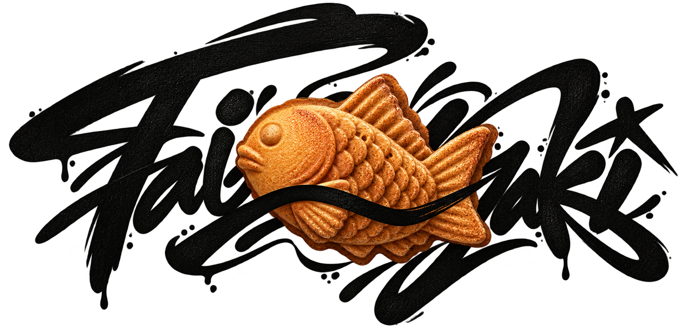

Phase-scoped tools
In the proposed model, each phase would expose only permitted tools, with server-side rejection of invalid calls.

Architecture concept — under development
Taiyaki explores plans held outside the model, server-controlled state transitions, and evidence-backed completion. These mechanisms are design goals, not shipped functionality.
The problem
Long-running agents lose plans, silently omit subtasks, and declare success too early. The proposed design treats an agent as an untrusted client of its own plan: the plan would live outside the context window, and the server would control state transitions.
Proposed design
In the proposed model, each phase would expose only permitted tools, with server-side rejection of invalid calls.
Verification would run server-side, producing PASS receipts bound to the current tree hash.
The proposed transition log would record actor, timestamp, and receipt references as evidence for completion.
Intended invariants
The goal is to require executable proof outside an agent's control before a task can be considered complete.
github.com/FabioFlorey/taiyaki ↗